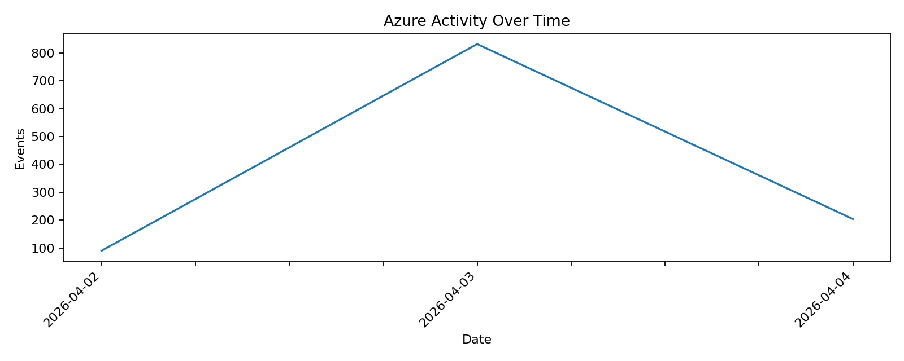
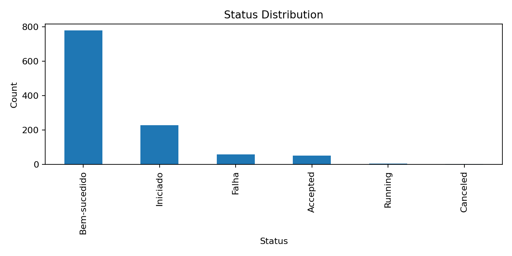
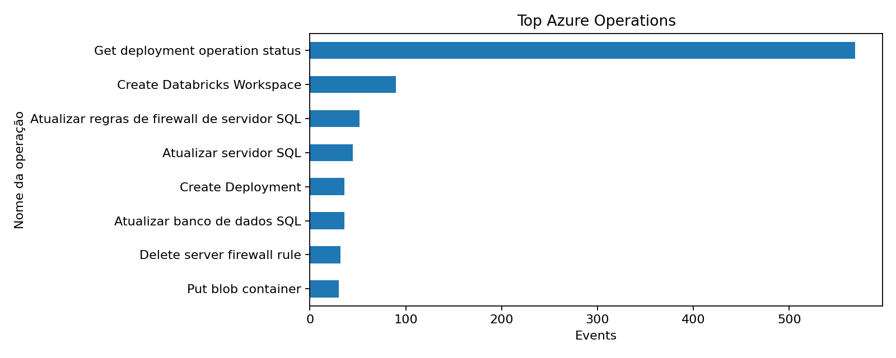

| Operation | Events |
|---|---|
| Get deployment operation status | 569 |
| Create Databricks Workspace | 90 |
| Atualizar regras de firewall de servidor SQL | 52 |
| Atualizar servidor SQL | 45 |
| Atualizar banco de dados SQL | 36 |
| Create Deployment | 36 |
| Delete server firewall rule | 32 |
| Put blob container | 30 |
| Resource Type | Events |
|---|---|
| Microsoft.Resources/deployments/operationStatuses | 569 |
| Microsoft.Databricks/workspaces | 103 |
| Microsoft.Sql/servers | 77 |
| Microsoft.Resources/deployments | 72 |
| MICROSOFT.SQL/servers | 63 |
| Microsoft.Sql/servers/firewallRules | 42 |
| Microsoft.Sql/servers/databases | 31 |
| Microsoft.Storage/storageAccounts/blobServices/containers | 30 |